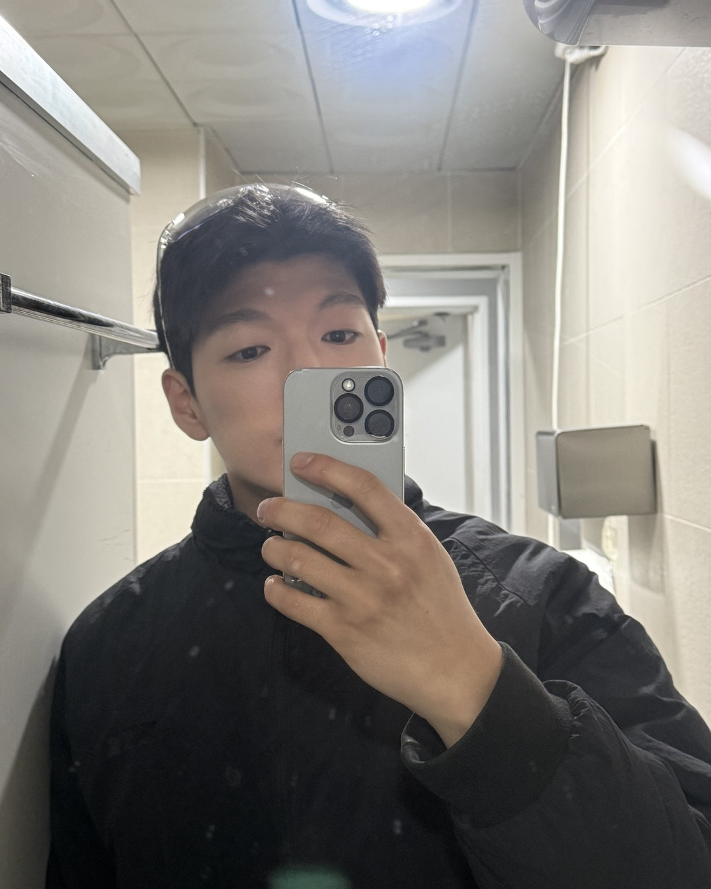
남자의 말이 줄어들 때,
머릿속에서 일어나는 일
(답장이 짧아진 그 사람.)
1/14
@mszexc
넘겨보세요 →
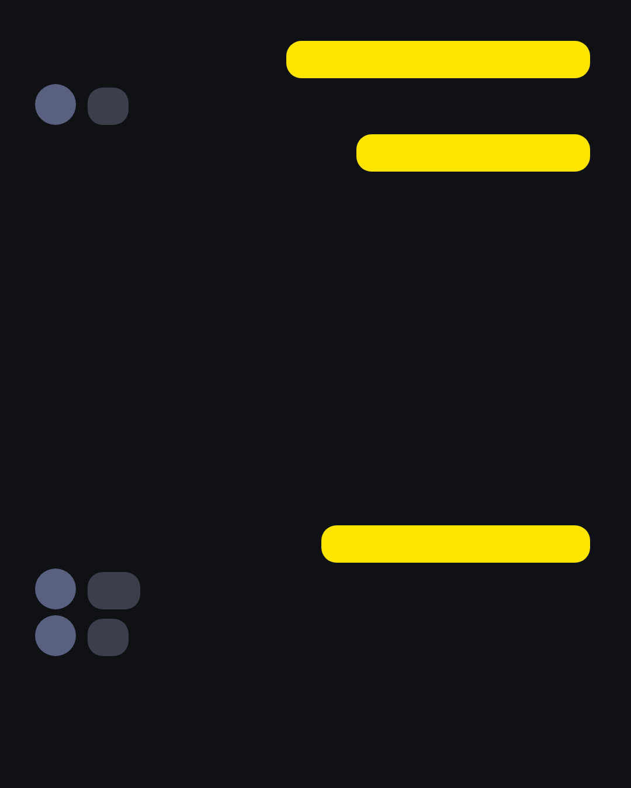
예전엔 길게 답하던 사람이
"응" "ㅇㅇ" "그래"
말이 줄었어요.
2/14
@mszexc
남자들끼리 하는 말 #47
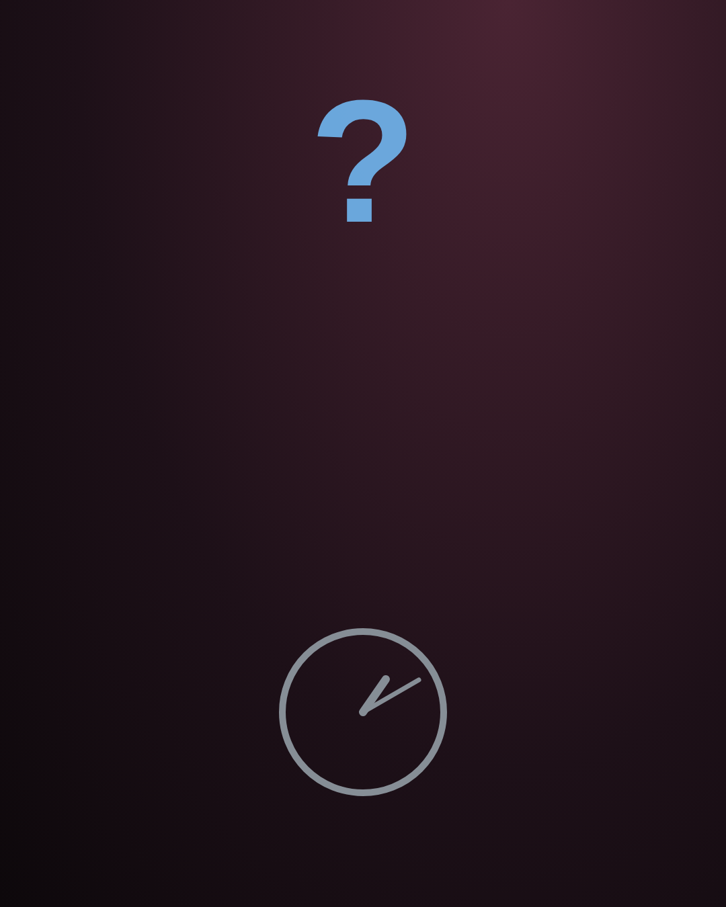
그럼 제일 먼저 이런 생각이 들죠.
"식었나?"
3/14
@mszexc
남자들끼리 하는 말 #47
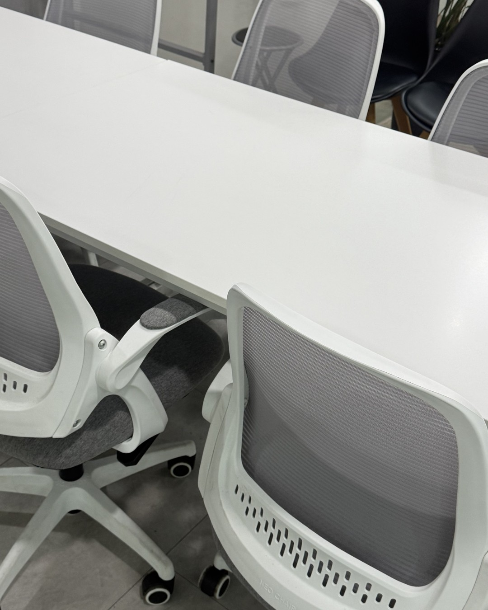
남자의 말이 줄어드는 이유는
생각보다 여러 가지예요.
4/14
@mszexc
남자들끼리 하는 말 #47
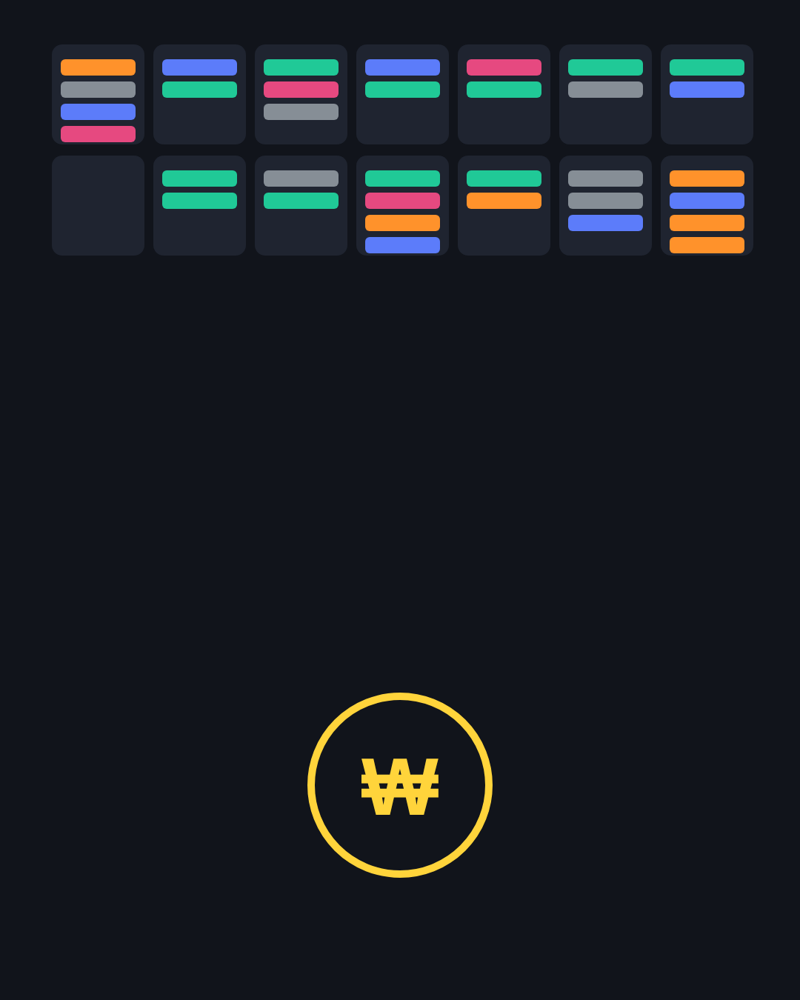
첫 번째.
머리가 다른 데 가 있어요.
(일, 돈, 가족. 남자는 한 번에 하나만 해요.)
5/14
@mszexc
남자들끼리 하는 말 #47
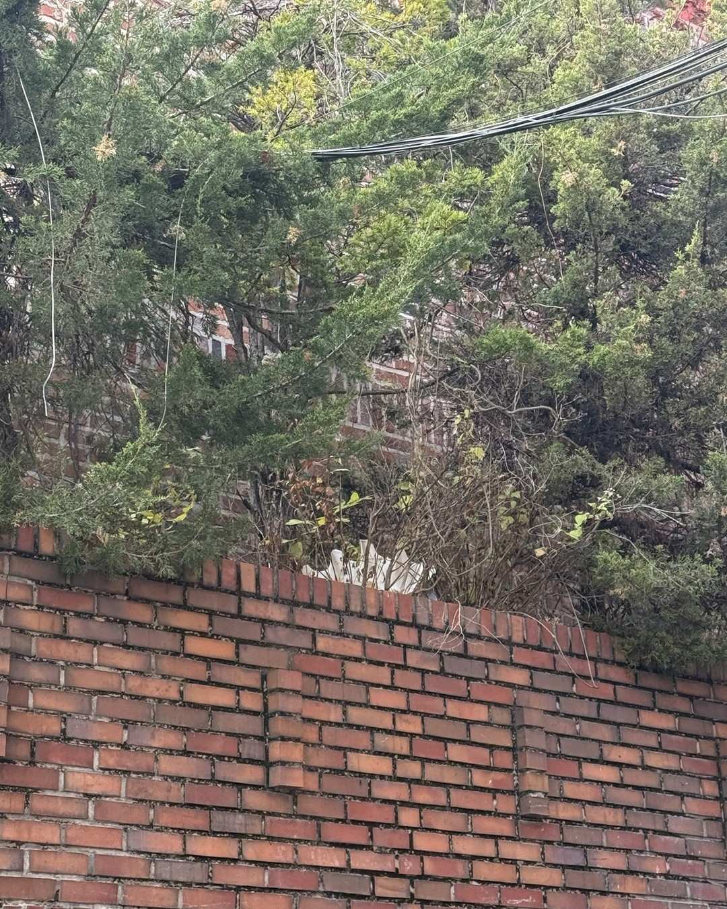
두 번째.
할 말이 정리가 안 됐어요.
(정리 안 된 말은 안 꺼내요.)
6/14
@mszexc
남자들끼리 하는 말 #47
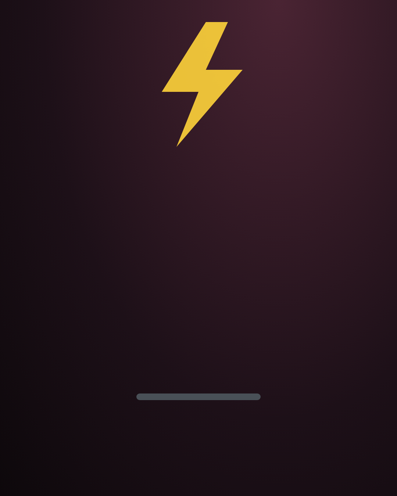
세 번째.
말하면 싸울 것 같아요.
(그래서 줄이는 걸 평화라고 생각해요.)
7/14
@mszexc
남자들끼리 하는 말 #47
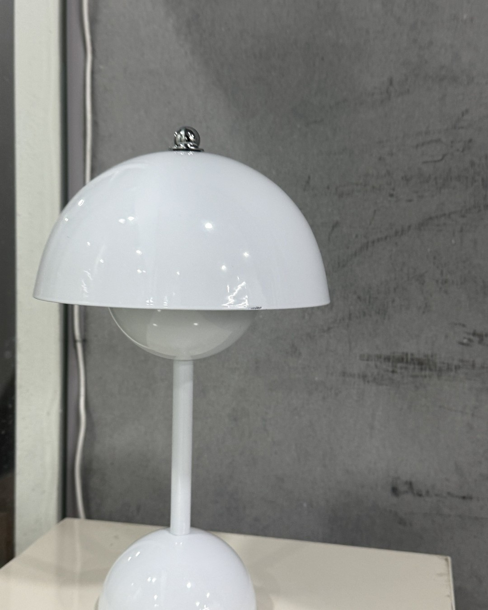
남자들끼리는 이렇게 말해요.
"말 많이 하면 꼭 싸우더라."
8/14
@mszexc
남자들끼리 하는 말 #47
네 번째.
마음이 정말 멀어지는 중이에요.
9/14
@mszexc
남자들끼리 하는 말 #47
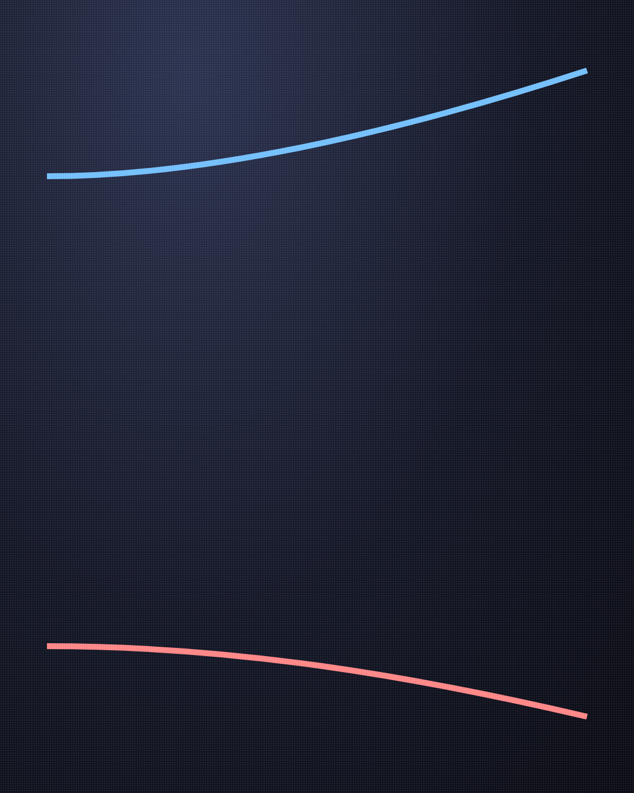
앞의 셋과 네 번째의 차이는
줄어든 말 대신 뭐가 남았는지예요.
10/14
@mszexc
남자들끼리 하는 말 #47
말은 줄어도 챙기는 건 남아 있다면,
아직 당신 쪽에 있어요.
("밥은 먹었어?" 같은 것.)
11/14
@mszexc
남자들끼리 하는 말 #47
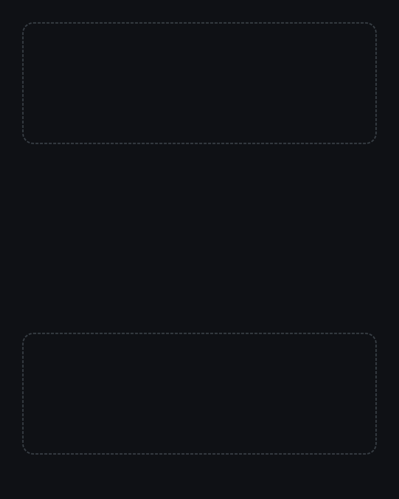
말도 챙김도 같이 줄었다면,
그때는 대화가 필요해요.
12/14
@mszexc
남자들끼리 하는 말 #47
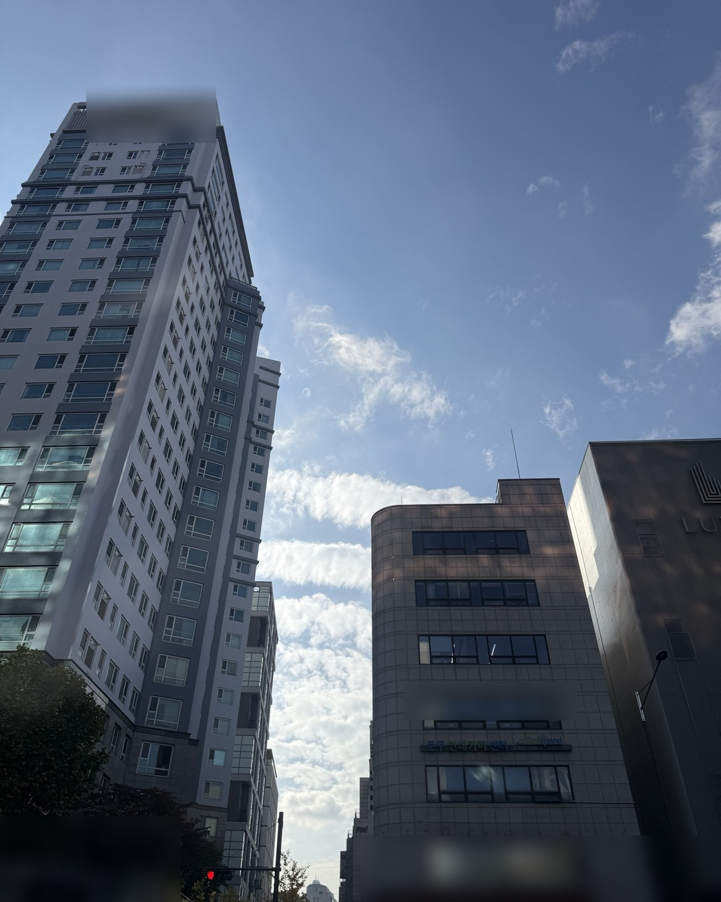
그럴 때 "왜 말이 없어?" 대신
"요즘 머리 복잡한 일 있어?"
(추궁 대신, 말할 문을 열어 두는 질문이에요.)
13/14
@mszexc
남자들끼리 하는 말 #47
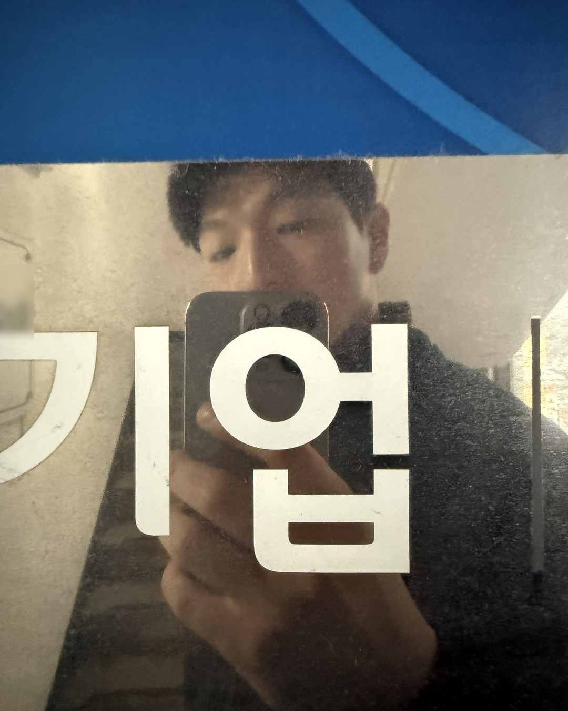
이것만 기억하세요.
줄어든 말보다, 남아 있는 행동을 보세요.
남자가 하는 말의 뜻은 전자책 1·2권에 · 프로필 링크에서 무료로 받아보세요
14/14
@mszexc
남자들끼리 하는 말 #47